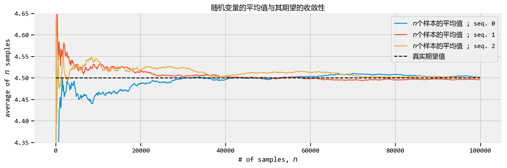
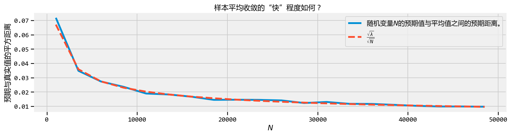
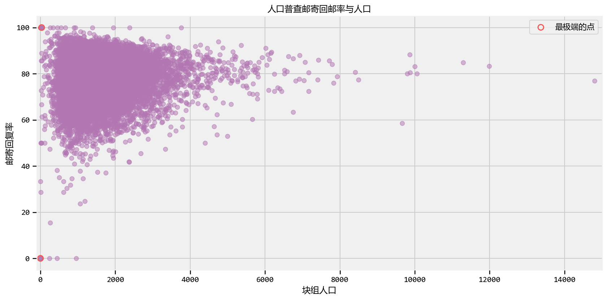

概率模型第四章 ： 大数定理
机器学习
Tensorflow 概率模型学习，代码运行于Tensorflow 1.14，文字半机器翻译。
Probabilistic Programming and Bayesian Methods for Hackers Chapter 4
| ### Table of Contents - Dependencies & Prerequisites - The greatest theorem never told - The Law of Large Numbers - Intuition - How do we compute \(Var(Z)\) though? - Expected values and probabilities - What does this all have to do with Bayesian statistics? - The Disorder of Small Numbers - Example: Aggregated geographic data - Example: Kaggle’s U.S. Census Return Rate Challenge - Example: How to order Reddit submissions - Setting up the Praw Reddit API - Register your Application on Reddit - Reddit API Setup - Sorting! - But this is too slow for real-time! - Extension to Starred rating systems - Example: Counting Github stars - Conclusion - Appendix - Exercises - Kicker Careers Ranked by Make Percentage - Average Household Income by Programming Language - References |
| ______ |
| ```python #@title Imports and Global Variables { display-mode: “form” } ““” The book uses a custom matplotlibrc file, which provides the unique styles for matplotlib plots. If executing this book, and you wish to use the book’s styling, provided are two options: 1. Overwrite your own matplotlibrc file with the rc-file provided in the book’s styles/ dir. See http://matplotlib.org/users/customizing.html 2. Also in the styles is bmh_matplotlibrc.json file. This can be used to update the styles in only this notebook. Try running the following code: |
| import json s = json.load(open(“../styles/bmh_matplotlibrc.json”)) matplotlib.rcParams.update(s) ““” from future import absolute_import, division, print_function |
#@markdown This sets the warning status (default is ignore, since this notebook runs correctly) warning_status = “ignore” #@param ["ignore", "always", "module", "once", "default", "error"] import warnings warnings.filterwarnings(warning_status) with warnings.catch_warnings(): warnings.filterwarnings(warning_status, category=DeprecationWarning) warnings.filterwarnings(warning_status, category=UserWarning) |
import numpy as np import os #@markdown This sets the styles of the plotting (default is styled like plots from FiveThirtyeight.com) matplotlib_style = ‘fivethirtyeight’ #@param ['fivethirtyeight', 'bmh', 'ggplot', 'seaborn', 'default', 'Solarize_Light2', 'classic', 'dark_background', 'seaborn-colorblind', 'seaborn-notebook'] import matplotlib.pyplot as plt; plt.style.use(matplotlib_style) import matplotlib.axes as axes; from matplotlib.patches import Ellipse from mpl_toolkits.mplot3d import Axes3D import pandas_datareader.data as web %matplotlib inline import seaborn as sns; sns.set_context(‘notebook’) from IPython.core.pylabtools import figsize #@markdown This sets the resolution of the plot outputs (retina is the highest resolution) notebook_screen_res = ‘retina’ #@param ['retina', 'png', 'jpeg', 'svg', 'pdf'] %config InlineBackend.figure_format = notebook_screen_res plt.rcParams[‘font.sans-serif’]=[‘YaHei Consolas Hybrid’] import tensorflow as tf tfe = tf.contrib.eager |
| # Eager Execution #@markdown Check the box below if you want to use Eager Execution #@markdown Eager execution provides An intuitive interface, Easier debugging, and a control flow comparable to Numpy. You can read more about it on the Google AI Blog use_tf_eager = False #@param {type:“boolean”} |
| # Use try/except so we can easily re-execute the whole notebook. if use_tf_eager: try: tf.enable_eager_execution() except: pass |
| import tensorflow_probability as tfp tfd = tfp.distributions tfb = tfp.bijectors |
def evaluate(tensors): “““Evaluates Tensor or EagerTensor to Numpy ndarrays. Args: tensors: Object of Tensor or EagerTensors; can belist,tuple,namedtuple` or combinations thereof. |
Returns: ndarrays: Object with same structure as tensors except with Tensor or EagerTensors replaced by Numpy ndarrays. ““” if tf.executing_eagerly(): return tf.contrib.framework.nest.pack_sequence_as( tensors, [t.numpy() if tf.contrib.framework.is_tensor(t) else t for t in tf.contrib.framework.nest.flatten(tensors)]) return sess.run(tensors) |
| class _TFColor(object): “““Enum of colors used in TF docs.”“” red = ‘#F15854’ blue = ‘#5DA5DA’ orange = ‘#FAA43A’ green = ‘#60BD68’ pink = ‘#F17CB0’ brown = ‘#B2912F’ purple = ‘#B276B2’ yellow = ‘#DECF3F’ gray = ‘#4D4D4D’ def getitem(self, i): return [ self.red, self.orange, self.green, self.blue, self.pink, self.brown, self.purple, self.yellow, self.gray,][i % 9] TFColor = _TFColor() |
| def session_options(enable_gpu_ram_resizing=True, enable_xla=True): ““” Allowing the notebook to make use of GPUs if they’re available. |
XLA (Accelerated Linear Algebra) is a domain-specific compiler for linear algebra that optimizes TensorFlow computations. ““” config = tf.ConfigProto() config.log_device_placement = True if enable_gpu_ram_resizing: # allow_growth=True makes it possible to connect multiple colabs to your # GPU. Otherwise the colab malloc’s all GPU ram. config.gpu_options.allow_growth = True if enable_xla: # Enable on XLA. https://www.tensorflow.org/performance/xla/. config.graph_options.optimizer_options.global_jit_level = (tf.OptimizerOptions.ON_1) return config |
| def reset_sess(config=None): ““” Convenience function to create the TF graph & session or reset them. ““” if config is None: config = session_options() global sess tf.reset_default_graph() try: sess.close() except: pass sess = tf.InteractiveSession(config=config) |
| reset_sess() ``` |
| WARNING: Logging before flag parsing goes to stderr. W0728 19:21:27.291700 139811709552448 lazy_loader.py:50] The TensorFlow contrib module will not be included in TensorFlow 2.0. For more information, please see: * https://github.com/tensorflow/community/blob/master/rfcs/20180907-contrib-sunset.md * https://github.com/tensorflow/addons * https://github.com/tensorflow/io (for I/O related ops) If you depend on functionality not listed there, please file an issue. |
| ## 最伟大的定理从未被告知过 |
| 本章的重点是一个总是在我们脑海中蹦蹦跳跳的想法，但很少在专门用于统计的书籍之外明确表达。事实上，到目前为止，我们在每个例子中都使用过这个简单的想法。 |
| ### 大数定律 |
| 让$ Z_i \(为\) N \(来自某些概率分布的独立样本。根据*大数定律*，只要预期值\) E[Z] $是有限的，以下成立， |
| \[\frac{1}{N} \sum_{i=1}^N Z_i \rightarrow E[ Z ], \;\;\; N \rightarrow \infty.\] |
| 文字表述: |
| > 来自相同分布的随机变量序列的平均值收敛于该分布的期望。 |
| 这似乎是一个无聊的结果，但它将是您使用的最有用的工具。他是计算机数值计算的重要手段。 |
| ### 直觉 |
| 如果上述法律有些令人惊讶，可以通过研究一个简单的例子来更清楚地说明。 |
| 考虑一个随机变量$ Z \(，它只能带两个值，\) c_1 \(和\) c_2 \(。假设我们有大量\) Z \(的样本，表示一个特定的样本\) Z_i \(。该定理规定，我们可以通过平均所有样本来估计\) Z $的预期值。考虑平均值： |
| \[ \frac{1}{N} \sum_{i=1}^N \;Z_i \] |
| 通过构造，$ Z_i \(只能接受\) c_1 \(或\) c_2 \(，因此我们可以对这两个值进行分区：\)$ \[\begin{align} \frac{1}{N} \sum_{i=1}^N \;Z_i & =\frac{1}{N} \big( \sum_{ Z_i = c_1}c_1 + \sum_{Z_i=c_2}c_2 \big) \\ & = c_1 \sum_{ Z_i = c_1}\frac{1}{N} + c_2 \sum_{ Z_i = c_2}\frac{1}{N} \\ & = c_1 \times \text{ (approximate frequency of $c_1$) } \\ & \;\;\;\;\;\;\;\;\; + c_2 \times \text{ (approximate frequency of $c_2$) } \\ & \approx c_1 \times P(Z = c_1) + c_2 \times P(Z = c_2 ) \\ & = E[Z] \end{align}\] $$ |
| 在极限平等保持，但我们可以通过在平均值中使用越来越多的样本来越来越近。该法适用于几乎任何分布，减去我们稍后将遇到的一些重要案例。 |
| ### 例子 ____ |
| 下面是三个不同泊松随机变量序列的大数定律图。 |
我们用参数$ = 4.5 \(对`sample_size = 100000`泊松随机变量进行抽样。 （回想一下泊松随机变量的期望值等于它的参数。）我们计算前\) n \(个样本的平均值，\)n=1$到sample_size。 |
| ```python sample_size_ = 100000 expected_value_ = lambda_val_ = 4.5 N_samples = tf.range(start=1, limit=sample_size_, delta=100) |
| plt.figure(figsize(12.5, 4)) for k in range(3): samples = tfd.Poisson(rate=lambda_val_).sample(sample_shape=(sample_size_)) [ samples_, N_samples_ ] = evaluate([ samples, N_samples ]) |
| partial_average_ = [ samples_[:i].mean() for i in N_samples_ ] |
| plt.plot( N_samples_, partial_average_, lw=1.5,label=“\(n\)个样本的平均值 ; seq. %d”%k) |
| plt.plot( N_samples_, expected_value_ * np.ones_like( partial_average_), ls = “–”, label = “真实期望值”, c = “k” ) |
| plt.ylim( 4.35, 4.65) plt.title( “随机变量的平均值与其期望的收敛性” ) plt.ylabel( “average of \(n\) samples” ) plt.xlabel( “# of samples, \(n\)”) plt.legend(); ``` |
|  |
| 看一下上面的图，很明显，当样本量很小时，平均值会有较大的变化（比较跳跃的最初平均值，然后平滑）。所有三条路径接近值4.5，但随着$ N $变大，只是调整它。数学家和统计学家有另一个名字：收敛。 |
| 我们可以问的另一个非常相关的问题是我收敛到预期值的速度有多快？让我们绘制一些新的东西。对于特定的$ N \(，让我们进行上述试验数千次，并计算出我们与真实预期值的平均距离。但等等——*平均计算*？这只是大数法则！例如，我们感兴趣的是，对于特定的\) N $，数量： |
| \[D(N) = \sqrt{ \;E\left[\;\; \left( \frac{1}{N}\sum_{i=1}^NZ_i - 4.5 \;\right)^2 \;\;\right] \;\;}\] |
| 对于某些$ N \(，上述公式可解释为距离真实值（平均值）的距离。 （我们取平方根，因此上述数量的维数和我们的随机变量是相同的）。由于上面是一个期望值，它可以使用大数定律近似：我们计算以下多次并平均它们，而不是平均\) Z_i $： |
| \[ Y_k = \left( \;\frac{1}{N}\sum_{i=1}^NZ_i - 4.5 \; \right)^2 \] |
| 通过计算上面的$ N_y $次（记住，它是随机的），并对它们求平均值： |
| \[ \frac{1}{N_Y} \sum_{k=1}^{N_Y} Y_k \rightarrow E[ Y_k ] = E\;\left[\;\; \left( \frac{1}{N}\sum_{i=1}^NZ_i - 4.5 \;\right)^2 \right]\] |
| 最后，取平方根： |
| \[ \sqrt{\frac{1}{N_Y} \sum_{k=1}^{N_Y} Y_k} \approx D(N) \] |
| ```python N_Y = tf.constant(250) # 用这么多来近似 D(N) N_array = tf.range(1000., 50000., 2500) # 在大约使用这么多样品。差异。 D_N_results = tf.zeros(tf.shape(N_array)[0]) lambda_val = tf.constant(4.5) expected_value = tf.constant(4.5) #for X ~ Poi(lambda) , E[ X ] = lambda |
| [ N_Y_, N_array_, D_N_results_, expected_value_, lambda_val_,] = evaluate([ N_Y, N_array, D_N_results, expected_value, lambda_val,]) |
| def D_N(n): ““” This function approx. D_n, the average variance of using n samples. ““” Z = tfd.Poisson(rate=lambda_val_).sample(sample_shape=(int(n), int(N_Y_))) average_Z = tf.reduce_mean(Z, axis=0) average_Z_ = evaluate(average_Z) |
| return np.sqrt(((average_Z_ - expected_value_)**2).mean()) |
| for i,n in enumerate(N_array_): D_N_results_[i] = D_N(n) |
| plt.figure(figsize(12.5, 3)) plt.xlabel( “\(N\)” ) plt.ylabel( “预期与真实值的平方距离” ) plt.plot(N_array_, D_N_results_, lw = 3, label=“随机变量\(N\)的预期值与平均值之间的预期距离。”) plt.plot( N_array_, np.sqrt(expected_value_)/np.sqrt(N_array_), lw = 3, ls = “–”, label = r”\(\frac{\sqrt{\lambda}}{\sqrt{N}}\)” ) plt.legend() plt.title( “样本平均收敛的“快”程度如何？ ” ); ``` |
|  |
| 正如预期的那样，随着$ N $增长，我们的样本平均值与实际预期值之间的预期距离会缩小。但也注意到收敛率降低，也就是说，我们只需要10 000个额外样本从0.020移动到0.015，相差0.005，但是20000更多样本再次从0.015降低到0.010，再次只有0.005减少。 |
| 事实证明，我们可以衡量这种收敛速度。上面我绘制了第二行，函数$ / \(。这不是任意选择的。在大多数情况下，给定一系列随机变量分布如\) Z \(，大数定律的收敛率为\) E [Z] $ |
| \[ \frac{ \sqrt{ \; Var(Z) \; } }{\sqrt{N} }\] |
| 这有用的知识：对于给定的大$ N \(，我们知道（平均而言）我们与估计的距离。另一方面，在贝叶斯环境中，这似乎是一个无用的结果：贝叶斯分析是不确定的，那么添加额外精确数字的*统计*点是什么？虽然绘图样本的计算成本可以很低，但*越大的*\)N$也很好。 |
| ### 我们如何计算$ Var（Z）$？ |
| 方差只是另一个可以近似的预期值！考虑以下情况，一旦我们得到预期值（通过使用大数定律来估计它，表示$ $），我们可以估计方差： |
| \[ \frac{1}{N}\sum_{i=1}^N \;(Z_i - \mu)^2 \rightarrow E[ \;( Z - \mu)^2 \;] = Var( Z )\] |
| ### 期望值和概率 |
| 期望值与估计概率之间的关系更为明显。定义指标功能 |
| \[\mathbb{1}_A(x) = \begin{cases} 1 & x \in A \\\\ 0 & else \end{cases} \] |
| 然后，根据大数定律，如果我们有许多样本$ X_i \(，我们可以通过以下方式估计事件\) A \(的概率，表示为\) P（A）$： |
| \[ \frac{1}{N} \sum_{i=1}^N \mathbb{1}_A(X_i) \rightarrow E[\mathbb{1}_A(X)] = P(A) \] |
| 同样，经过一段时间的观测后，这是相当明显的：如果事件发生，指标函数只有1，所以我们只将事件发生的时间相加并除以试验总数（考虑我们通常如何使用频率逼近概率） 。例如，假设我们希望估计$ Z Exp（.5）\(大于5的概率，并且我们从\) Exp（.5）$分布中得到许多样本。 |
| \[ P( Z > 5 ) = \frac{1}{N}\sum_{i=1}^N \mathbb{1}_{z > 5 }(Z_i) \] |
| ```python N = 10000 |
| print(“概率估计:”, len(np.where(evaluate(tfd.Exponential(rate=0.5).sample(sample_shape=N)) > 5))/N ) ``` |
| 概率估计: 0.0001 |
| ### 这与贝叶斯统计有什么关系？ |
| 使用期望值计算贝叶斯推断中将在下一章中介绍的点估计。在更多分析的贝叶斯推断中，我们需要评估表示为多维积分的复杂期望值。不再。如果我们可以直接从后验分布中进行采样，我们只需要评估平均值。更容易。如果准确性是一个优先事项，那么上面的图表显示你收敛速度有多快。如果需要进一步的精确度，只需从后验中采集更多样本。 |
| 什么时候够了？你何时可以停止从后方抽取样本？这是从业者的决定，也取决于样本的方差（从上面回忆高方差意味着平均值会收敛得更慢）。 |
| 我们也应该理解大数定律何时失败。顾名思义，并将上面的图表与小\(N\)进行比较，该法则适用于大样本量。没有这个，渐近结果是不可靠的。了解定理失败的情况可以让我们对自己应该多么不自信充满信心。下一节将讨论此问题。 |
| ### 小数目的紊乱 |
| 大数定律只有在$ N $得到无限大时才有效：永远不可能实现。虽然定理是一个强有力的工具，但广泛地应用它是蛮干的。我们的下一个例子说明了这 |
| ### Example: 汇总的地理数据 |
| 数据通常以汇总形式出现。例如，数据可以按州，县或城市级别分组。当然，人口数量因地理区域而异。如果数据是每个地理区域的某些特征的平均值，那么我们必须意识到大数定律以及它对于人口较少的区域如何失败。 |
| 我们将在玩具数据集上观察到这一点。假设我们的数据集中有五千个县。此外，每个州的人口数量均匀分布在100到1500之间。人口数量的生成方式与讨论无关，因此我们不能证明这一点。我们感兴趣的是测量每个县的平均身高。我们不知道，身高不会因县而异，每个人，无论他或她目前居住在哪个县，都有与他们身高相同的分布： |
| \[ \text{height} \sim \text{Normal}(\text{mu}=150, \text{sd}=15 ) \] |
| 我们汇总了县级的个人，因此我们只有县内平均值的数据。我们的数据集可能是什么样的？ |
| ```python plt.figure(figsize(12.5, 4)) |
| std_height = 15. mean_height = 150. n_counties = 500 smallest_population = 100 largest_population = 1500 pop_generator = np.random.randint norm = np.random.normal |
| population_ = pop_generator(smallest_population, largest_population, n_counties) |
| # Our strategy to vectorize this problem will be to end-to-end concatenate the # number of draws we need. Then we’ll loop over the pieces. d = tfp.distributions.Normal(loc=mean_height, scale= 1. / std_height) x = d.sample(np.sum(population_)) |
| average_across_county = [] seen = 0 for p in population_: average_across_county.append(tf.reduce_mean(x[seen:seen+p])) seen += p average_across_county_full = tf.stack(average_across_county) |
| ##located the counties with the apparently most extreme average heights. [ average_across_county_, i_min, i_max] = evaluate([ average_across_county_full, tf.argmin( average_across_county_full ), tf.argmax( average_across_county_full )]) |
| #plot population size vs. recorded average plt.scatter( population_, average_across_county_, alpha = 0.5, c=TFColor[6]) plt.scatter( [ population_[i_min], population_[i_max] ], [average_across_county_[i_min], average_across_county_[i_max] ], s = 60, marker = “o”, facecolors = “none”, edgecolors = TFColor[0], linewidths = 1.5, label=“极端的高度”) |
| plt.xlim( smallest_population, largest_population ) plt.title( “平均高度 vs. 县人口”) plt.xlabel(“县人口”) plt.ylabel(“县的平均身高”) plt.plot( [smallest_population, largest_population], [mean_height, mean_height], color = “k”, label = “true expected height”, ls=“–” ) plt.legend(scatterpoints = 1); ``` |
 |
| 我们观察到了什么？ 如果不考虑人口规模 我们冒着造成巨大推理错误的风险：如果我们忽略了人口规模，我们会说最短和最高个体的县已被正确圈出。但由于以下原因，这种推断是错误的。这两个县不一定具有最极端的高度。计算出的较小种群的平均值不能很好地反映出人口的真实预期价值（事实上应该是$ = 150 $）。样本大小/人口规模/ $ N $，无论你想要什么，它都太小了，无法有效地调用大数定律。 |
| 我们提供了更多反对这种推论的证据。回想一下，人口数量均匀分布在100到1500之间。我们的直觉应该告诉我们，人口最高极度的县也应该统一分布在100到1500之间，当然也不依赖于该县的人口。不是这样。以下是具有最极端高度的县的人口规模。 |
python print("10个最少县的人口规模：") print(population_[ np.argsort( average_across_county_ )[:10] ], '\n') print("10个最高县的人口规模： ") print(population_[ np.argsort( -average_across_county_ )[:10] ]) |
| 10个最少县的人口规模： [160 134 280 129 207 176 411 256 247 176] |
| 10个最高县的人口规模： [113 127 258 362 185 224 478 310 148 312] |
| 在100到1500之间根本没有统一。这是大数定律的绝对失败。 |
| ### 示例：Kaggle的美国。人口普查退货率挑战 |
| 以下是2010年美国人口普查的数据，该数据将县以外的人口划分为街区集团（城市街区或同等城市的集合）。这个数据集来自Kaggle机器学习竞赛，一些同事和我参与了。目的是使用人口普查变量（中位数收入，女性人数）预测一组群体的人口普查信件回邮率，测量值在0到100之间。街区集团，拖车停车场数量，平均儿童人数等）。下面我们绘制人口普查邮件回复率与块组人口的关系： |
| ```python reset_sess() |
| import wget url = ‘https://raw.githubusercontent.com/CamDavidsonPilon/Probabilistic-Programming-and-Bayesian-Methods-for-Hackers/master/Chapter4_TheGreatestTheoremNeverTold/data/census_data.csv’ filename = wget.download(url) filename ``` |
| ‘census_data.csv’ |
| ```python plt.figure(figsize(12.5, 6.5)) data_ = np.genfromtxt( “census_data.csv”, skip_header=1, delimiter= “,”) plt.scatter( data_[:,1], data_[:,0], alpha = 0.5, c=TFColor[6]) plt.title(“人口普查邮寄回邮率与人口”) plt.ylabel(“邮寄回复率”) plt.xlabel(“块组人口”) plt.xlim(-100, 15e3 ) plt.ylim( -5, 105) |
| i_min = tf.argmin( data_[:,0] ) i_max = tf.argmax( data_[:,0] ) |
| [ i_min_, i_max_ ] = evaluate([ i_min, i_max ]) |
| plt.scatter( [ data_[i_min_,1], data_[i_max_, 1] ], [ data_[i_min_,0], data_[i_max_,0] ], s = 60, marker = “o”, facecolors = “none”, edgecolors = TFColor[0], linewidths = 1.5, label=“最极端的点”) |
| plt.legend(scatterpoints = 1); ``` |
|  |
| 以上是统计学中的经典现象。我说经典指的是上面散点图的“形状”。它遵循经典的三角形形式，随着我们增加样本大小而紧缩（随着大数定律变得更加精确）。 |
| 我可能会过分强调这一点，也许我应该把这本书命名为“你没有大数据问题！”，但这里再次举例说明小数据集的问题，而不是大数据集。简单地说，使用大数定律不能处理小数据集。与对大数据集（例如大数据）毫不费力地应用定理相比较。我之前提到矛盾的是，大数据预测问题是通过相对简单的算法解决的。通过理解大数定律创建稳定的解决方案，即加入或减少一些数据点不会对解决方案产生太大影响，可以部分解决悖论。另一方面，向小型数据集添加或删除数据点可能会产生截然不同的结果。 |
| 为了进一步阅读大数定律的隐患，我强烈推荐优秀的手稿最危险的方程式 |
| ### Example: 计算Github星 |
| Github存储库的平均星数是多少？你怎么算这个？有超过600万个存储库，因此有足够的数据来调用大数定律。让我们开始提取一些数据。 |
| ```python reset_sess() |
| import wget url = ‘https://raw.githubusercontent.com/CamDavidsonPilon/Probabilistic-Programming-and-Bayesian-Methods-for-Hackers/master/Chapter3_MCMC/data/github_data.csv’ filename = wget.download(url) filename ``` |
| ‘github_data (1).csv’ |
| ```python # Github data scrapper # See documentation_url: https://developer.github.com/v3/ |
| from json import loads import datetime import numpy as np from requests import get |
| ““” variables of interest: indp. variables - language, given as a binary variable. Need 4 positions for 5 langagues - #number of days created ago, 1 position - has wiki? Boolean, 1 position - followers, 1 position - following, 1 position - constant |
| dep. variables -stars/watchers -forks ““” |
| MAX = 8000000 today = datetime.datetime.today() randint = np.random.randint N = 10 #sample size. auth = (“zhen8838”, “zqh19960305” ) |
| language_mappings = {“Python”: 0, “JavaScript”: 1, “Ruby”: 2, “Java”:3, “Shell”:4, “PHP”:5} |
| #define data matrix: X = np.zeros( (N , 12), dtype = int ) |
| for i in range(N): is_fork = True is_valid_language = False |
| while is_fork == True or is_valid_language == False: is_fork = True is_valid_language = False |
| params = {“since”:randint(0, MAX ) } r = get(“https://api.github.com/repositories”, params = params, auth=auth ) results = loads( r.text )[0] #im only interested in the first one, and if it is not a fork. # print(results) is_fork = results[“fork”] |
| r = get( results[“url”], auth = auth) |
| #check the language repo_results = loads( r.text ) try: language_mappings[ repo_results[“language” ] ] is_valid_language = True except: pass |
| #languages X[ i, language_mappings[ repo_results[“language” ] ] ] = 1 |
| #delta time X[ i, 6] = ( today - datetime.datetime.strptime( repo_results[“created_at”][:10], “%Y-%m-%d” ) ).days |
| #haswiki X[i, 7] = repo_results[“has_wiki”] |
| #get user information r = get( results[“owner”][“url”] , auth = auth) user_results = loads( r.text ) X[i, 8] = user_results[“following”] X[i, 9] = user_results[“followers”] |
| #get dep. data X[i, 10] = repo_results[“watchers_count”] X[i, 11] = repo_results[“forks_count”] print() print(” ————– “) print(i,”: “, results[”full_name”], repo_results[”language” ], repo_results[”watchers_count”], repo_results[”forks_count”]) print(” ————– “) print() |
| np.savetxt(“github_data.csv”, X, delimiter=“,”, fmt=“%d” ) ``` |
| ————– 0 : hbradlow/autograde Python 0 0 ————– |
| ————– 1 : pkellett/test JavaScript 2 0 ————– |
| ————– 2 : sputnikus/cmdoro Python 0 0 ————– |
| ————– 3 : theteam/vagrant-django-template Python 36 12 ————– |
| ————– 4 : contra/JMOT Java 17 9 ————– |
| ————– 5 : jcDesigns99/sample_app Ruby 1 0 ————– |
| ————– 6 : tbarho/base_app Ruby 1 0 ————– |
| ————– 7 : lvh/txscrypt Python 6 1 ————– |
| ————– 8 : Xand0r/Treebook JavaScript 1 0 ————– |
| ————– 9 : wingertge/ThumbsApplyGroupManager Java 1 0 ————– |
| ### 结论 |
| 虽然大数定律很酷，但只有它的名字暗示它才真实：只有大样本量。我们已经看到了如何通过不考虑数据的形状来影响我们的推理。 |
| 1. 通过（简单的）从后验分布中抽取许多样本，我们可以确保大数定律适用于我们接近期望值（我们将在下一章中进行）。 |
| 2. 贝叶斯推理理解，对于小样本，我们可以观察到野生随机性。我们的后验分布将通过更广泛而不是紧密集中来反映这一点。因此，我们的推论应该是可纠正的。 |
| 3. 不考虑样本大小有重大影响，尝试对不稳定的对象进行排序会导致病态排序。上面提供的方法解决了这个问题。 |
| ##### Exercises |
| 1. How would you estimate the quantity \(E\left[ \cos{X} \right]\), where \(X \sim \text{Exp}(4)\)? What about \(E\left[ \cos{X} | X \lt 1\right]\), i.e. the expected value given we know \(X\) is less than 1? Would you need more samples than the original samples size to be equally accurate? |
| 你如何估计$ E \(，其中\) X （4）\(？或者\) E \(，即预期值*给定*我们知道\) X $小于1？您是否需要比原始样本大小更多的样本才能同样准确？ |
| ```python ## Enter code here import tensorflow as tf import tensorflow_probability as tfp tfd = tf.distributions |
| reset_sess() |
| exp = tfd.Exponential(rate=4.) N = 10000 X = exp.sample(sample_shape=int(N)) |
| e_cos_x=evaluate(tf.reduce_sum(tf.math.cos(X)/N)) e_cos_x_le_1=evaluate(tf.reduce_sum(tf.math.cos(X)*tf.cast(X<1,tf.float32)/N)) |
| print(‘𝐸[cos𝑋]’,e_cos_x) print(‘𝐸[cos𝑋|𝑋<1]’,e_cos_x_le_1) ``` |
| 𝐸[cos𝑋] 0.9411032 𝐸[cos𝑋|𝑋<1] 0.9354135 |
| 2. The following table was located in the paper “Going for Three: Predicting the Likelihood of Field Goal Success with Logistic Regression” [2]. The table ranks football field-goal kickers by their percent of non-misses. What mistake have the researchers made? |
Kicker Careers Ranked by Make Percentage
| Rank | Kicker | Make % | Number of Kicks |
|---|---|---|---|
| 1 | Garrett Hartley | 87.7 | 57 |
| 2 | Matt Stover | 86.8 | 335 |
| 3 | Robbie Gould | 86.2 | 224 |
| 4 | Rob Bironas | 86.1 | 223 |
| 5 | Shayne Graham | 85.4 | 254 |
| … | … | … | |
| 51 | Dave Rayner | 72.2 | 90 |
| 52 | Nick Novak | 71.9 | 64 |
| 53 | Tim Seder | 71.0 | 62 |
| 54 | Jose Cortez | 70.7 | 75 |
| 55 | Wade Richey | 66.1 | 56 |
In August 2013, a popular post on the average income per programmer of different languages was trending. Here’s the summary chart: (reproduced without permission, cause when you lie with stats, you gunna get the hammer). What do you notice about the extremes?
Average household income by programming language
| Language | Average Household Income ($) | Data Points |
| Puppet | 87,589.29 | 112 |
| Haskell | 89,973.82 | 191 |
| PHP | 94,031.19 | 978 |
| CoffeeScript | 94,890.80 | 435 |
| VimL | 94,967.11 | 532 |
| Shell | 96,930.54 | 979 |
| Lua | 96,930.69 | 101 |
| Erlang | 97,306.55 | 168 |
| Clojure | 97,500.00 | 269 |
| Python | 97,578.87 | 2314 |
| JavaScript | 97,598.75 | 3443 |
| Emacs Lisp | 97,774.65 | 355 |
| C# | 97,823.31 | 665 |
| Ruby | 98,238.74 | 3242 |
| C++ | 99,147.93 | 845 |
| CSS | 99,881.40 | 527 |
| Perl | 100,295.45 | 990 |
| C | 100,766.51 | 2120 |
| Go | 101,158.01 | 231 |
| Scala | 101,460.91 | 243 |
| ColdFusion | 101,536.70 | 109 |
| Objective-C | 101,801.60 | 562 |
| Groovy | 102,650.86 | 116 |
| Java | 103,179.39 | 1402 |
| XSLT | 106,199.19 | 123 |
| ActionScript | 108,119.47 | 113 |
References
- Wainer, Howard. The Most Dangerous Equation. American Scientist, Volume 95.
- Clarck, Torin K., Aaron W. Johnson, and Alexander J. Stimpson. “Going for Three: Predicting the Likelihood of Field Goal Success with Logistic Regression.” (2013): n. page. Web. 20 Feb. 2013.
- http://en.wikipedia.org/wiki/Beta_function#Incomplete_beta_function